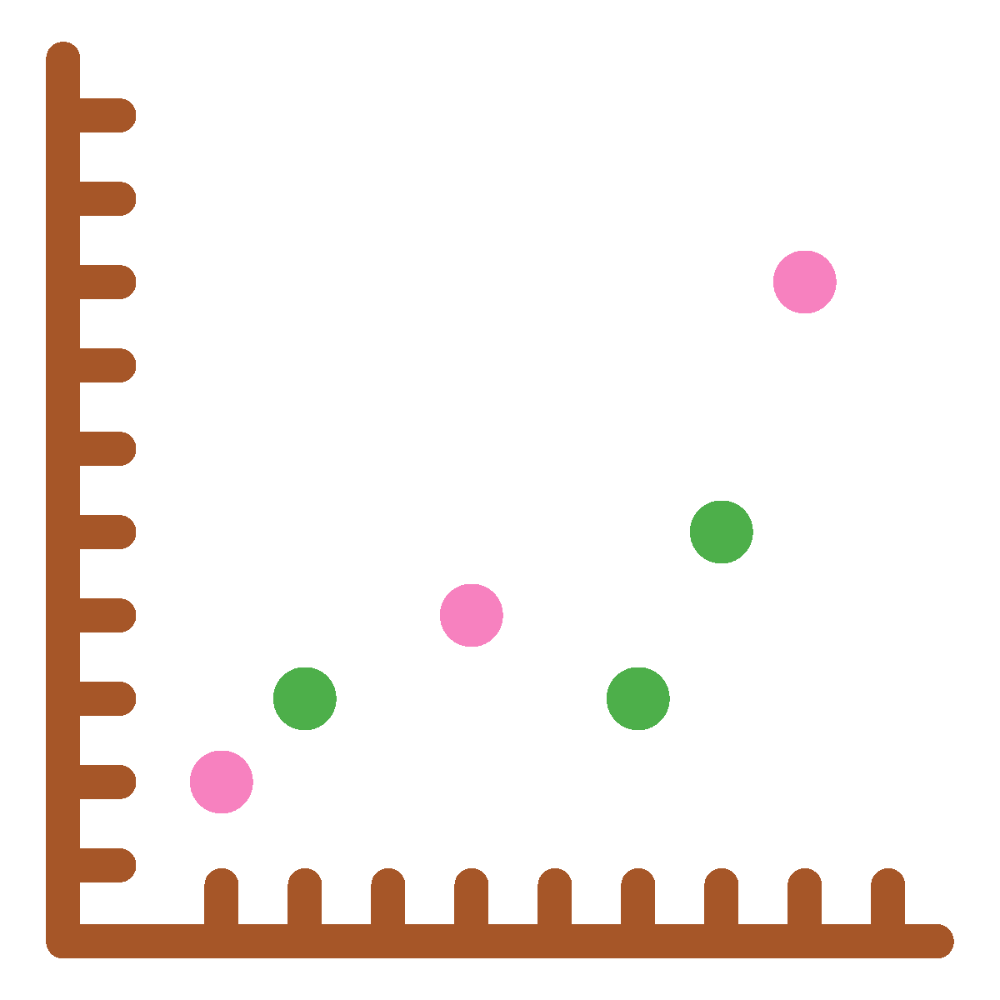
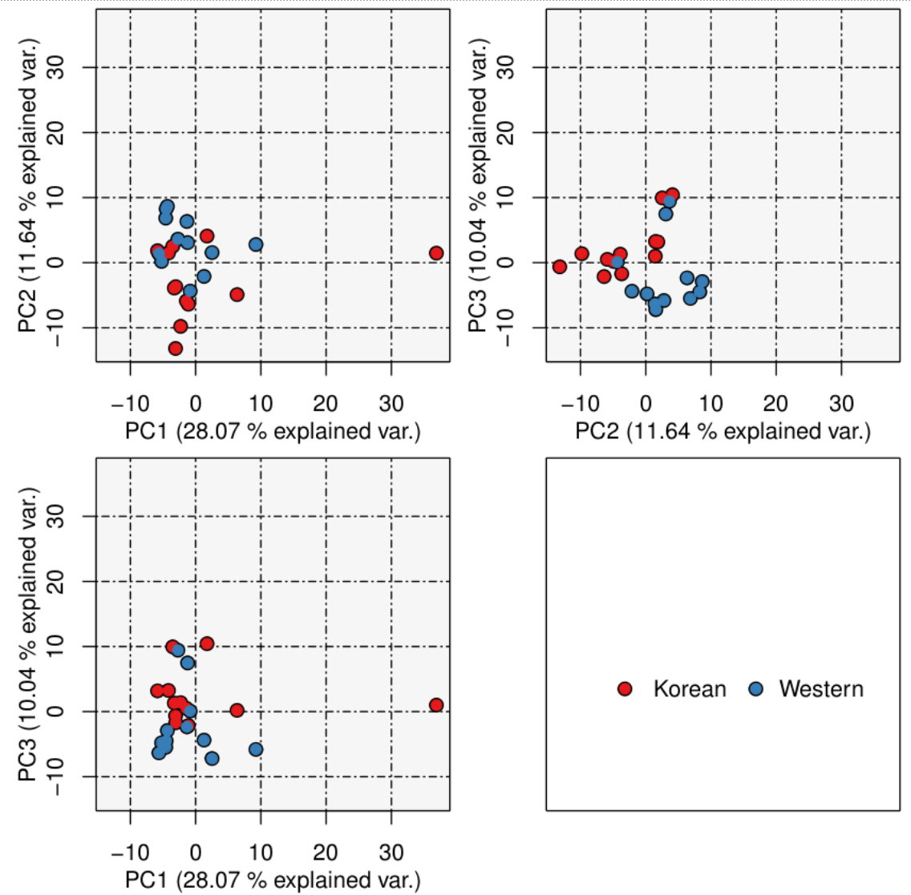

Chapter 9 Functional profiling
It is also possible to investigate functional differences between metagenome (and metatranscriptome) samples by directly interrogating the read data. We will now look at how this can be done with a package called HUMAnN2 (The HMP Unified Metabolic Analysis Network 2), a pipeline designed to accurately profile the presence/absence and abundance of microbial pathways in metagenomic sequencing data.
9.1 HUMAnN2
First, we will carry out an example run of the software and briefly explore the output files. HUMAnN2 can take a long time to run so we will use a small amount of example data.
9.1.1 HUMAnN2: conda, directories, and files

We need a new conda environment again. Open a new terminal (right click on the main screen background, choose Applications -> Shell -> bash) and run the below:
. usehumann2Make a new directory and move into it.
mkdir ~/4-FunctionalProfiling
cd ~/4-FunctionalProfilingCopy over some test data we will the analysis on. This is a demonstration FASTQ file that we will use. It will be small enough to run HUMAnN2 in a reasonable time.
cp /pub39/tea/nsc006/NEOF/Shotgun_metagenomics/humann2/demo.fq.gz .9.1.2 HUMAnN2: run

Now we will perform the run with HUMAnN2 so we can inspect the output files.
humann2 \
--input demo.fq.gz \
--output demo.humann2 \
--threads 10Here, we are telling the software to use demo.fq.gz as input and to create a new output directory called demo.humann2 where the results will be generated.
As the software runs, you might notice that as part of the process, HUMAnN2 runs MetaPhlAn2. The purpose of this is to identify what species are present in the sample, so HUMAnN2 can tailor generate an appropriate database of genes (from those species) to map against. It will carry out this alignment against the gene database, then a protein database, and finally compute which gene families are present to determine which functional pathways are present and how abundant they are.
9.1.3 HUMAnN2: output

Once the run has completed, change into the newly created output directory and list the files that are there.
cd demo.humann2
lsYou will see that there are three files and one directory. The directory (demo_humann2_temp) contains intermediate temporary files and can be disregarded here.
The three output files are:
demo_genefamilies.tsv: A table file showing the number of reads mapping to each UniRef90 gene family, Values are normalised by the length of each gene family (i.e. RPK, or Reads per Kilobase). Additionally, the values are stratified so that they show the overall community abundance but also a breakdown of abundance per species detected. This allows researchers to delve into species specific functions, rather than only looking at the metagenomic functions as a whole,demo_pathabundance.tsv: As above, a table file showing the normalised abundance of MetaCyc pathways. These abundances are calculated based on the UniRef90 gene family mapping data and are also stratified by species.demo_pathcoverage.tsv: Similar to above, except instead of abundances of pathways, this table shows the coverage, or completeness, of pathways. For example, a pathway may contain 5 components (or genes/proteins)- Pathway1 : A → B → C → D → E 100% complete
- A species identified in the sample may only have four of the components, though, meaning that the pathway is only 80% complete (represented as 0.8)
- Pathway1 : A → B → C →
D→ E 80% complete
The basic format of these three output files is the same, so let’s take a look at the pathway abundance table.
less demo_pathabundance.tsvYou will see that there are two columns:
- The first column shows the pathways.
- UNMAPPED indicates reads that could not be aligned.
- UNINTEGRATED indicates reads that aligned to targets not implicated in any pathways.
- The second column shows the abundance.
Press q to exit and let’s look at one specific pathway, COA-PWY-1 (a coenzyme A biosynthesis II pathway).
grep COA-PWY-1 demo_pathabundance.tsvThis shows two entries with two different values, I.e.
- COA-PWY-1: coenzyme A biosynthesis II (mammalian) 6.3694267516
- COA-PWY-1: coenzyme A biosynthesis II (mammalian)|g__Bacteroides.s__Bacteroides_vulgatus 4.7961630695
This is an example of the species stratification mentioned above. The first line shows the abundance of this pathway across the entire sample, but the second line shows the abundance contributed by Bacteroides_vulgatis.
Have a look at the other two output files; note the similar layout.
Finally, return to the parent directory i.e. 4-FunctionalProfiling
cd ..Note: The directory demo_humann2_temp can be very large and so should be deleted in real projects once you are certain they are not needed. However, these files can be useful for debugging.
9.2 Statistical comparison between samples
Looking at the functional profile of one sample in isolation is usually not very informative. First, there is nothing to compare it to and second, there are no biological replicates. We will therefore use all the Korean and Western diet samples.
It would take many hours to analyse all of the data using HUMAnN2 and is outside of the scope of this course. For this reason, samples were analysed prior to the workshop to generate the output files we covered above.
For the purposes of this comparison, we will look at the pathway abundances only. First copy over the results data directory and have a look in it.
cp –r /pub39/tea/nsc006/NEOF/Shotgun_metagenomics/DietPathAbundance .
ls DietPathAbundanceYou will see there are 12 files prefixed with K and 12 prefixed with W, for the Korean diet and Western diet samples, respectively. Take a look in one of the files; you might notice that there is no species stratification. The reason for this is that for this test, all pathway abundances have been collapsed to a community level, ignoring differences in species. When you analyse your own data-sets, you can leave this stratification in to identify significant differences between functional profiles at a species level.
Note: You can create an unstratified pathabundance file with a command like: cat pathabundance.tsv | grep -v "|" > pathabundance.unstratified.tsv. The grep -v "|" removes lines that contain | which the stratified lines should only contain.
9.2.1 HUMAnN2 comparison: combining data

First, we need to combine these 24 tables into one large results table. HUMAnN2 provides a tool to do this:
humann2_join_tables --input DietPathAbundance/ --output diet.tsvThis command will look for all tables in the DietPathAbundance directory and generate a large, 24 column table called diet.tsv. You can take a look to see that this has worked correctly.
less -S diet.tsv9.2.2 HUMAnN2 comparison: renormalising data
The next step is to renormalise the data. Currently, all of the abundance values are only normalised within each sample, i.e. accounting for the size of the pathways/length of genes. However, they are not normalised between samples, and this is very important. For example, if we had sequenced two samples, A and B, and we obtained 5 million reads for sample A and 20 million reads for sample B, without normalisation, it might look that there was up to 4x as much functional activity in sample B!
To correct for this, we normalise the abundance values based on the number of reads in each sample. We will normalise by counts per million, or cpm. (We could also normalise to relative abundance where all abundances for each sample add up to 1).
Equation: \[ cpm = p * (\frac{1000000}{t}) \]
Where:
- cpm = counts per million.
- p = count of pathway in sample.
- t = total count of sample.
Renormalisation command:
humann2_renorm_table \
--units cpm \
--input diet.tsv \
--special n \
--output diet.cpm.tsvThis command generates the normalised data in the new table diet.cpm.tsv. The --special n option tells the script to remove all unmapped and unassigned values (UNMAPPED & UNINTEGRATED) from the table.
9.2.3 HUMAnN2 comparison: PCA plot

Now that we have our data normalised, we can visualise the dataset to see how the two groups look, i.e. do samples in the same diet group appear to correlate well with each other and are they distinguishable from those from the other diet group? To do this, we will draw a PCA plot. We will need to provide the script with some metadata. This has been prepared and can be copied over as follows
cp /pub39/tea/nsc006/NEOF/Shotgun_metagenomics/diet.metadata.tsv .This is a table file where the first column is the sample name with subsequent columns representing categories of metadata. Here, the column of interest is the second one, ‘Diet,’ and samples are labelled as either ‘Western’ or ‘Korean.’ We can now run the PCA plot generation script and look at the result.
PCA_plot.r diet.cpm.tsv diet.metadata.tsv Diet diet.pca.pdfThis command takes our data table as the first argument, our metadata table as the second argument, the metadata category of interest as the third argument and the output file as the final argument.
Note: PCA_plot.r is a custom R script that will be provided after the course.
Now we can view the plot.
okular diet.pca.pdf &You should see 3 plots, each one plotting 2 of the first 3 principal components against each other. The axis of each plot also shows how much of the overall variance that that particular component accounts for. Blue and red dots show the Western and Korean diet samples, respectively, and samples that cluster closely together are more similar to each other.
From this, we can see that there is some separation between the two dietary groups, but that they are not completely separated, i.e. there is some overlap. This can happen frequently with datasets such as this, that are likely to be much less controlled than laboratory samples and therefore show more between-group variance.

Questions:
- Is there anything unexpected about any of the samples, from these plots?
- If so, what might be a sensible course of action before proceeding with statistical analysis?
9.2.4 HUMAnN2 comparison: LEfSe

For the final part of this section, we will see if there are any statistically significant differences between the two sample groups. There are several ways in which this can be achieved but we will carry out LEfSe again.
Task: Go back to your LEfSe terminal (or create a new one and use . uselefse). Then change directory to 4-FunctionalProfiling)
First make a new copy of the file we will work on:
cp diet.cpm.tsv diet.cpm.lefse.tsvChange the file diet.cpm.lefse.tsv with you favourite text editor to make it LEfSe compatible. 2 edits are required:
- Change the
# Pathwayin the first line toname. - Add a new line at the top for the diet metadata (same as we did for the
Brackendata).
As you have carried out LEfSe already we will have one code box showing all the commands.
#LEfSe format
lefse-format_input.py diet.cpm.lefse.tsv diet.cpm.lefse -c 1 -u 2 -o 1000000
#Run LEfSe
run_lefse.py diet.cpm.lefse diet.cpm.lefse.out
#Produce LEfSe plot
lefse-plot_res.py --dpi 200 --format png diet.cpm.lefse.out biomarkers.png
#View plot
okular biomarkers.pngLook at the output and see what pathways count as biomarkers for the 2 groups.
That completes the non assembly approach to shotgun metagenomic analysis. The next chapters will cover an assembly approach.
9.3 HUMAnN3
CONDA env installed in chos 8
3rd version of HUMAnN
Upgraded along with MetaPhlAn to version 3.0. A computational tool for profiling the composition of microbial communities from metagenomic.
Contains 2x more species pangenomes and 3x more gene families (vs. v2.0).
Using small dataset and small database
DBs in /pub39/tea/nsc006/humann_dbs/
##Start